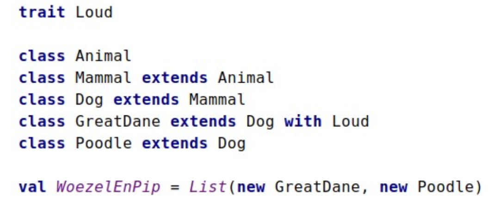
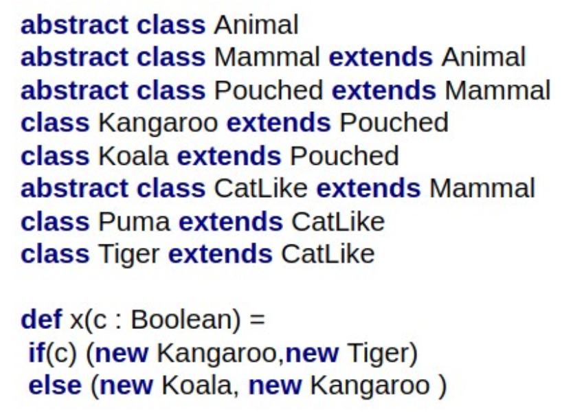
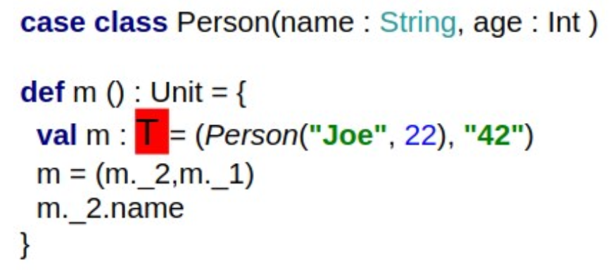
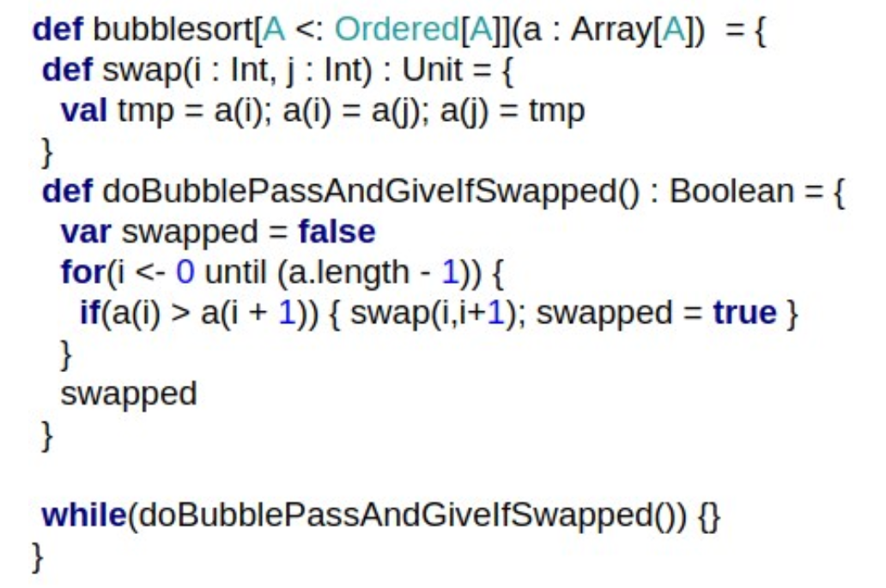
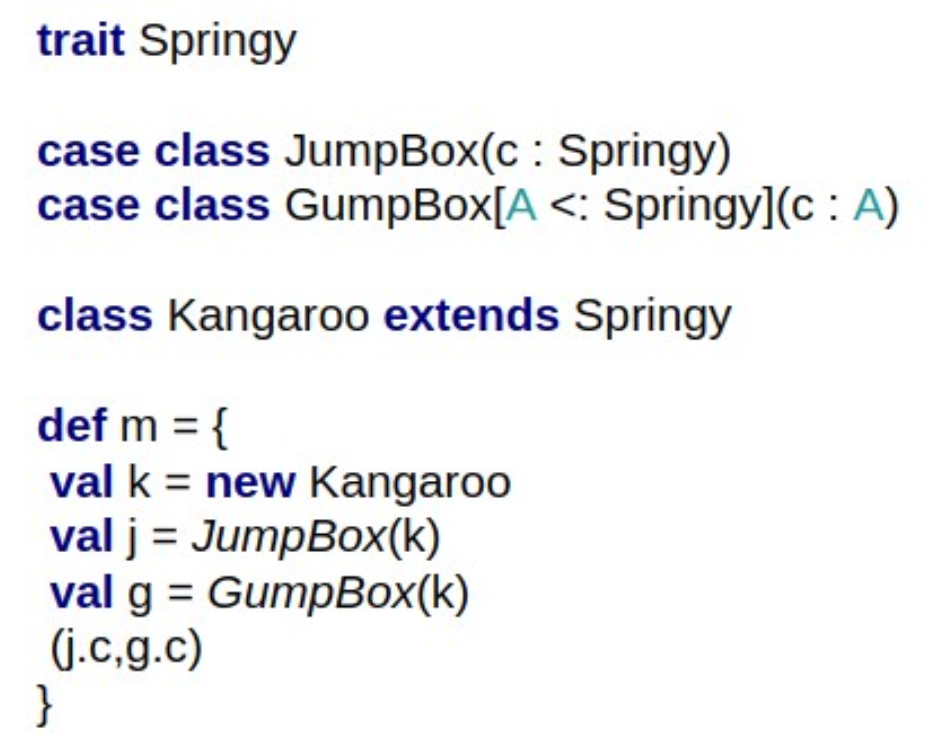
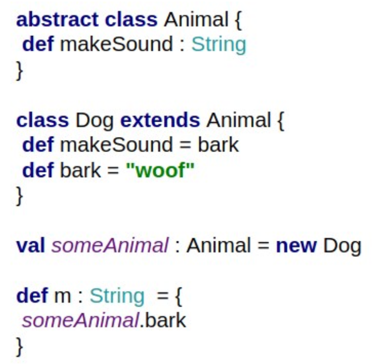
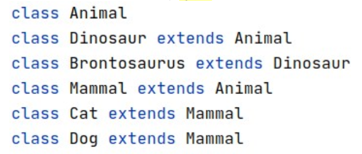
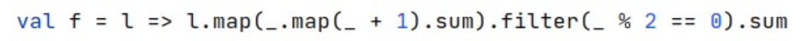
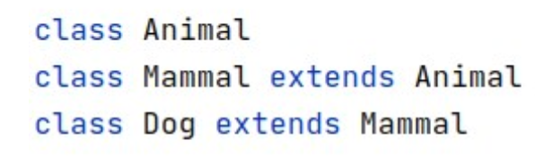
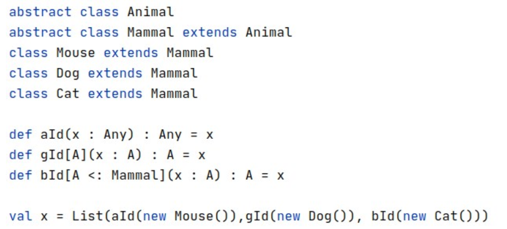

What types does WoezelEnPip have? (you can select multiple)

List[Dog]
List[Any]
List[Mammal]
Any
List[Animal]
What is the most specific return type of x?

(Pouched,Mammal)
What is the most specific type we can fill in for T (such that there is no type error in m())?

Always type error
Which statements are true of the above function? (0 or more answers possible)

bubblesort is a pure function
The nested functions in bubblesort can be copy-pasted outside of bubblesort: The program would still work if we moved the nested function outside bubblesort without changing their code.
bubblesort is a curried function
bubblesort works for any type A that has the Ordered[A] trait.
Nested functions in bubblesort inherit traits from the bubblesort-parent.
Most specific type of m?

(Springy, Kangaroo)
The above program will....

Give a type error in m: "bark is not defined on type Animal"
Which of the following types are subtypes of the function type "Dog => Animal"?

Any => Cat
Mammal => BrontoSaurus
Animal => Dinosaur
Mammal => Mammal
Animal => Nothing
What is the (most specific) type of f?

List[List[Int]] => Int
Given the definitions above, which of the following types are subtypes of Array[Mammal]

Nothing
What is the most specific type of x?

List[Any]